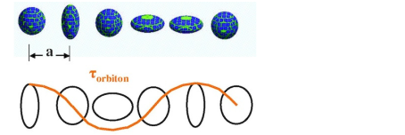
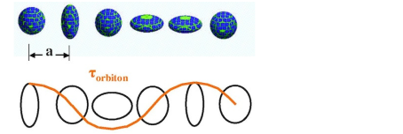

Next: Powder-averaging the spectra Up: Powder Neutron Cross Section Previous: Creation of the q-vector Contents Index
In order to set the correct temperature and  (or ) etc. edit
the input files for module mcdisp and start mcdisp. Mind
to select the fast algorithm so that a file mcdisp.qei is created.
(or ) etc. edit
the input files for module mcdisp and start mcdisp. Mind
to select the fast algorithm so that a file mcdisp.qei is created.